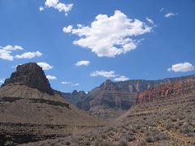
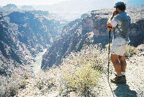
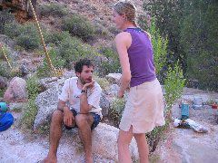
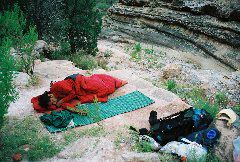

|

|

|

In the campsite |
|

Sleeping on the riverbed |
At 8am we left camp to traverse the last miles of Grapevine creek, onto the main Tonto plateau again. It was a relatively painless walk except for the initial sections of the trail that were narrow ledges of sandy terrain over very deep cliffs. Carrying a heavy backpack, it is difficult to navigate through these ledges especially when you find rocks protruding from the walls on the Canyon side that bump against the backpack.
Before noon we reached Cottonwood Creek. On our way, we found a group of hikers guided by a park ranger who asked us if we had seen a solo hiker recently. Apparently, a person who was supposed to be hiking in the area was missing. This reminded us of the real dangers that we had been so close to. Hiking solo in these areas is truly a risky activity, considering how relatively easy it is to fall down, run out of water or just be heat struck.
At Cottonwood, we relaxed, finished reading "An Ideal Husband" by Oscar Wilde, and bummed around until dinner. Then we had a team meeting to decide what the course of action for the next days was. We had been told that the probability of finding plenty of water was high at Hance Creek. Therefore, we decided to reach the creek the next day, camp there, enjoy the water, and then hike out on the next day. We planned to reach Hance from the Southern side, which meant climbing Horseshoe Mesa and descend on the eastern side of it, past Page (or Miner's) spring. We preferred to reach Hance from the South instead from the North on the Tonto trail because that allowed us to reload water at Page without needing to reach Hance. The spring had been confirmed to have water by the group we had encountered. That night on Cottonwood we bivouacked again on the creek directly.
<--Previous day | Next day--> * Index